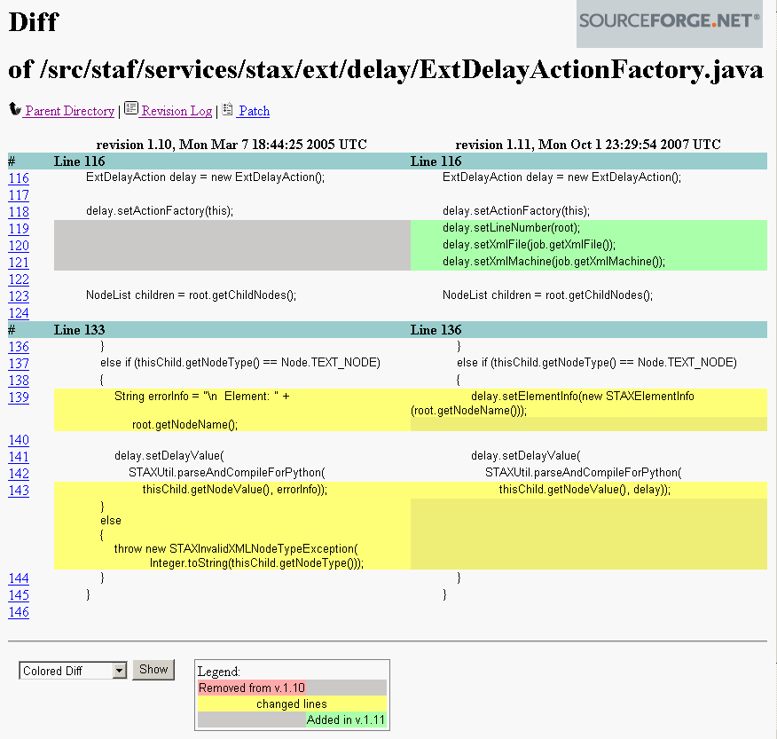
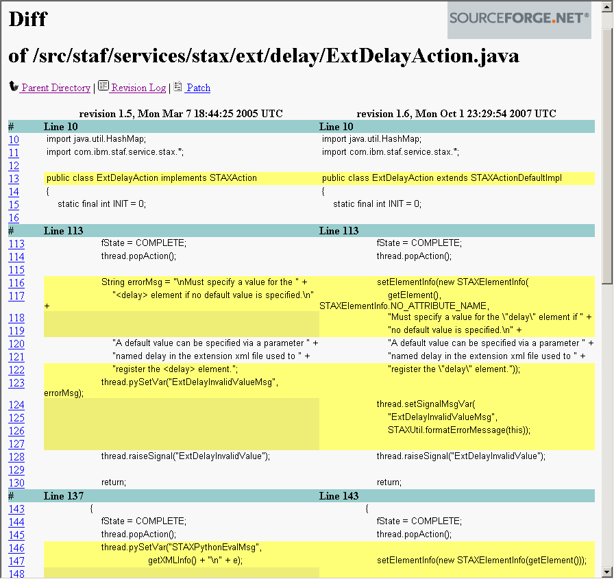
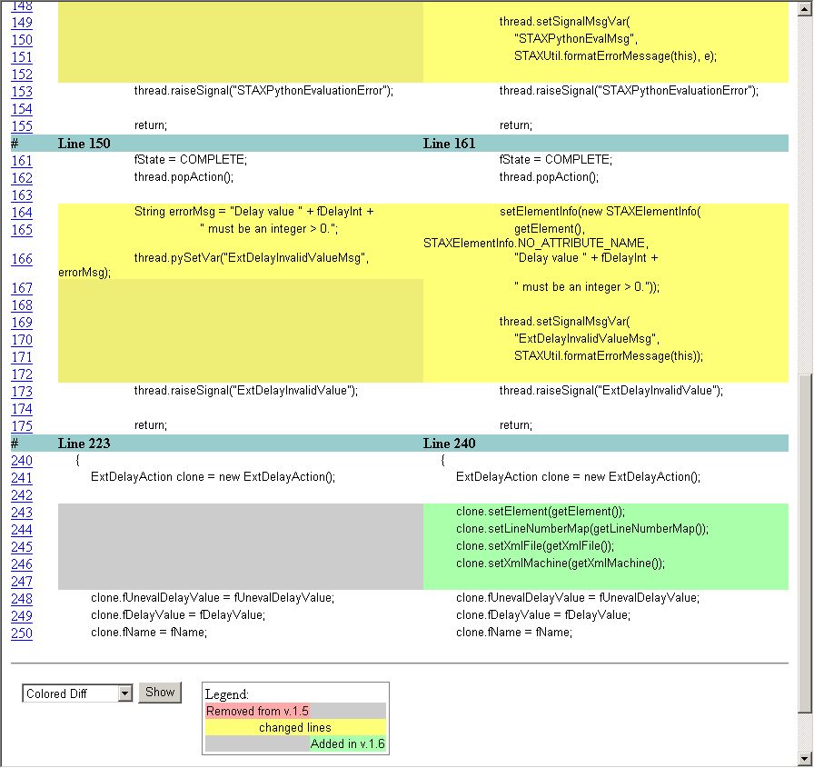
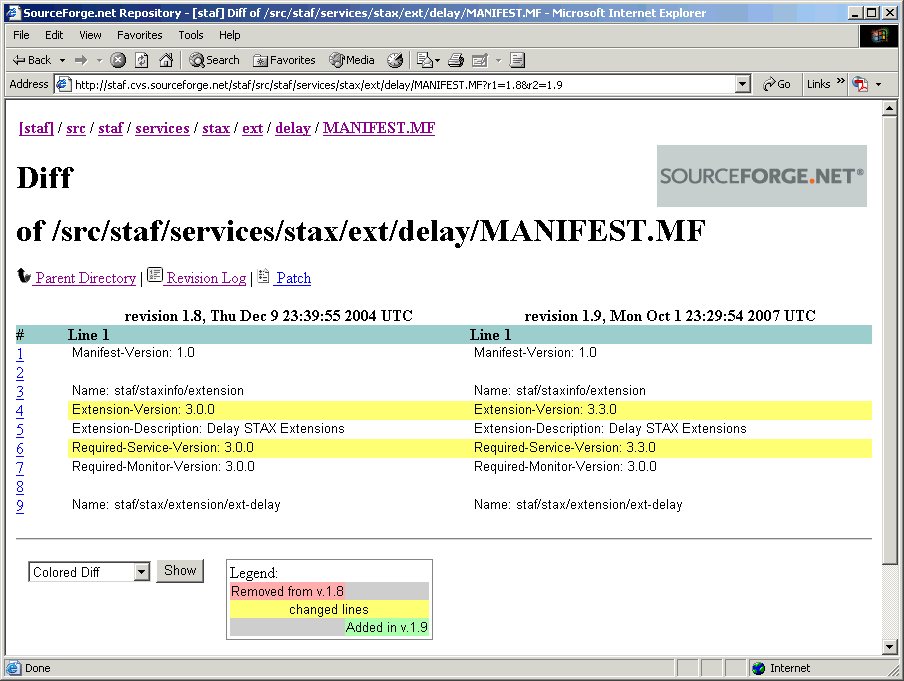
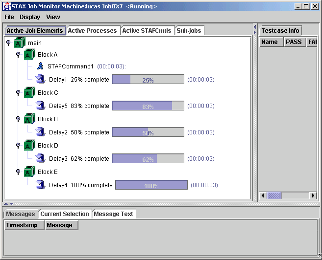
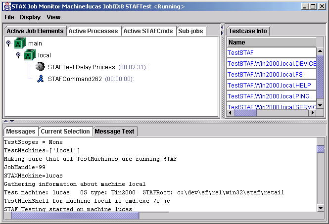

October 3, 2007
Version 3.3.0
This document explains how to create extensions for STAX. Extensions to the STAX service can be written which define new elements that can be used in a STAX xml file. In addition, extensions to the STAX Monitor can be written which define plug-in views which can be displayed via the STAX Monitor.
It assumes that you are familiar with writing, compiling, and executing Java code, creating jar files, and the process of building software in general. It will walk you through the process of:
Developers who want to write STAX extensions are the intended audience for this document.
A couple of sample STAX extensions are provided and are referenced throughout this document:
This document assumes you are using STAX V3.3.0 as some new classes were added in STAX V3.3.0 that allows your extension to provide better debug information (e.g. line number, xml file name, and machine name).
When creating STAX extensions, it is helpful to have the STAX source code, in addition to the STAX javadoc documentation.
Externally open sourced STAX code is available on SourceForge via two methods:
All STAX source code is contained in the /src/staf/services/stax directory:
Each STAF source tar file contains a snapshot of the source code for a released version of STAF, including the source code for STAF services. Note, that new versions of STAX are not necessarily released at the same time as new STAF releases are made available.
Note that this version of the STAX Extensions Developer's Guide assumes you have the source code for STAX V3.3.0 or later as it uses some classes that were added in STAX V3.3.0 (e.g. STAXActionDefaultImpl, STAXElementInfo) to set/get line number, xml file, and machine information to provide better debug information when an error occurs. Note that STAX V3.3.0 was released after STAF V3.2.3, so to obtain STAX 3.3.0 or later source code via a tar file, you need to use a STAF source code tar file for a version of STAF released after V3.2.3.
The current STAX code is contained in CVS, including code that has not been released yet.
SourceForge provides several ways to access project CVS repositories:
If you have CVS on your system, you can extract a non-updateable version of the source directory from the CVS tree. The instructions on how to do this are available via the "CVS" link at the top of http://sourceforge.net/projects/staf, and then click on "Site Docs" at the left on this page. See topic 5, "Information for SourceForge.net Project Developers", particularly the "Introduction to SourceForge.net Project CVS Services". You may also want to see topic 6, "CVS Instructions".
If you don't have CVS directly, you can obtain it, along with a bunch of other Unix tools, via Cygwin at http://sources.redhat.com/cygwin. Also, other software, such as Eclipse and IBM WebSphere Studio Application Developer (WSAD), allow you to directly access CVS trees.
Naming Conventions for STAX Extensions
To try to make sure that the names of your extension's elements, classes, and event sub-types do not clash with the names of future STAX elements or with the names of other extensions, you should follow these naming conventions when writing STAX extensions:
public static final String EXT_DELAY = new String("ext-delay");
thread.getJob().generateEvent(ExtDelayActionFactory.EXT_DELAY, delayMap);
Writing STAX Service Extensions
For each STAX service extension you create, you must write, at a minimum, the following two classes:
The STAXActionFactory interface is a factory interface that creates a STAX action based on information obtained by parsing an XML node from a DOM tree for elements whose DTD information it provides. STAX will create a single instance of each STAXActionFactory class. This class must provide at least one of the following constructors:
public ExtDelayActionFactory()
{ /* Do nothing */ }
Some examples of why the extension may require access to the STAX service object are:
Here's an example of a constructor that accepts a STAX object for an extension class named ExtDelayActionFactory which uses the STAX object to register a job management handler:
public ExtDelayActionFactory(STAX staxService)
{
// Note that in order for it's initJob method to be run at the start
// of a job, you must register the factory as a Job Management handler.
staxService.registerJobManagementHandler(this);
}
An example of a constructor that accepts a STAX object and a Map object is provided in ExtDelayActionFactory.java. It's constructor uses the STAX object to register a list handler, a query handler, and a job management handler, and uses the Map object to verify that the parameters contained in the map are valid for this extension and to store the parameter values to be used by the extension.
public ExtDelayActionFactory(STAX staxService, Map parmMap)
throws STAXExtensionInitException
{
// See code provided in ExtDelayActionFactory.java for
// this constructor.
}
This class must provide an implementation for the following methods:
To store the line number, file name, and machine name in your action object, use the STAXActionDefaultImpl class's setLineNumber(), setXmlFile(), and setXmlMachine() methods.
For each extension XML element's text node or attribute node value that should be evaluated via Python, call the STAXUtil.parseAndCompileForPython method to parse the string containing the Python code to remove leading whitespace and to compile the Python code before the STAX job is executed to check for validity. The parseAndCompileForPython method requires the following two arguments and returns a string containing the parsed and compiled Python code:
Note: A deprecated version of the STAXUtil.parseAndCompileForPython method requires the same first argument, but the second argument is a string that contains additional information to help identify the xml element (and attribute, if applicable) if a Python compile exception is raised.
Before calling STAXUtil.parseAndCompileForPython(), call the STAXActionDefaultImpl class's setElementInfo() method and pass it a new instance of the STAXElementInfo class to set information to be used if an error occurs such as:
For more information about the STAXElementInfo class, see its source code at src/staf/services/stax/service/STAXElementInfo.java.
Here's an example an extension's parseAction method that calls the STAXUtil.parseAndCompileForPython method for the value of an element's text node:
public STAXAction parseAction(STAX staxService, STAXJob job,
org.w3c.dom.Node root) throws STAXException
{
ExtDelayAction delay = new ExtDelayAction();
delay.setActionFactory(this);
// Gets the line number for the root element (e.g. ext-delay) and the name
// of the xml file and machine and stores this information in the action
// object (so it can be used later if an error occurs)
delay.setLineNumber(root);
delay.setXmlFile(job.getXmlFile());
delay.setXmlMachine(job.getXmlMachine());
NodeList children = root.getChildNodes();
for (int i = 0; i < children.getLength(); ++i)
{
Node thisChild = children.item(i);
if (thisChild.getNodeType() == Node.TEXT_NODE)
{
// Sets element information about the particular element/
// attribute being parsed so that if an error occurs, the
// parseAndCompileForPython method will get the line number
// for the specified element.
delay.setElementInfo(new STAXElementInfo(
root.getNodeName(), STAXElementInfo.NO_ATTRIBUTE_NAME));
delay.setDelayValue(
STAXUtil.parseAndCompileForPython(
thisChild.getNodeValue(), delay));
}
}
return delay;
}
For more information about the STAXActionFactory interface, see its source code
at src/staf/services/stax/service/STAXActionFactory.java.
The STAXActionDefaultImpl class implements the STAXAction interface and defines the action to take when processing a STAX XML element. This class must provide an implementation for the following methods:
If your extension raises a signal, call the STAXActionDefaultImpl class's setElementInfo() method and pass it a new instance of the STAXElementInfo class to set the name of the element being processed (required), the attribute name being processed (if applicable), the index of the element (if the element can be specified multiple times), and an optional string containing additional error information. Then, when setting the signal's message variable, use the STAXUtil.formatErrorMessage() method to create a nicely formatted error message that includes the line number (and file and machine) information for the element causing the signal to be raised. For more information about the STAXElementInfo class, see its source code at src/staf/services/stax/service/STAXElementInfo.java.
For more information on the STAXActionDefaultImpl class, see its source code at src/staf/services/stax/service/STAXActionDefaultImpl.java. For more information on the STAXAction interface, see its source code at src/staf/services/stax/service/STAXAction.java.
Note that if no value is specified for the delay element (e.g. <ext-delay/> or <ext-delay></ext-delay>), the default delay value is used. The default delay value can be specified if an extension xml file is used to register the delay extension. If the extension xml file specifies a parameter named delay, its value is used as the default delay value. If no default delay value is provided, a ExtDelayInvalidValue signal is raised and the job is terminated.
Here's an example of an extension xml file used to register the delay extension that specifies a default delay value of 5 seconds:
<?xml version="1.0" encoding="UTF-8" standalone="no"?>
<!DOCTYPE stax-extensions SYSTEM "stax-extensions.dtd">
<stax-extensions>
<extension jarfile="{STAF/Config/STAFRoot}/services/ExtDelay.jar">
<parameter name="delay" value="5"/>
</extension>
</stax-extensions>
The delay service extension lets you specify <delay> elements in a STAX
XML job file. Here are some examples:
<ext-delay>10</ext-delay>
<ext-delay/>
Here's the ExtDelayActionFactory source code for the delay extension which implements the STAXActionFactory interface. Its source code is provided in src/staf/services/stax/ext/delay/ExtDelayActionFactory.java.
/*****************************************************************************/
/* Software Testing Automation Framework (STAF) */
/* (C) Copyright IBM Corp. 2002 */
/* */
/* This software is licensed under the Eclipse Public License (EPL) V1.0. */
/*****************************************************************************/
package com.ibm.staf.service.stax.extension.samples.extdelay;
import org.w3c.dom.Node;
import org.w3c.dom.NamedNodeMap;
import org.w3c.dom.NodeList;
import java.util.ArrayList;
import java.util.Iterator;
import java.util.Map;
import java.util.HashMap;
import com.ibm.staf.service.stax.*;
public class ExtDelayActionFactory implements STAXActionFactory,
STAXJobManagementHandler
{
public static final String EXT_DELAY = new String("ext-delay");
private static Map fParameterMap = new HashMap();
private static String fDTDInfo =
"\n" +
"<!--================= The Ext-Delay Element ============================ -->\n" +
"<!--\n" +
" Delays for the specified number of seconds and generates and event\n" +
" every iteration.\n" +
"-->\n" +
"<!ELEMENT ext-delay (#PCDATA)>\n";
public ExtDelayActionFactory() { }
public ExtDelayActionFactory(STAX staxService)
{
// Note that in order for it's initJob method to be run at the start
// of a job, you must register the factory as a Job Management handler.
staxService.registerJobManagementHandler(this);
}
public ExtDelayActionFactory(STAX staxService, Map parmMap)
throws STAXExtensionInitException
{
// Note that in order for it's initJob method to be run at the start
// of a job, you must register the factory as a Job Management handler.
staxService.registerJobManagementHandler(this);
// If an invalid parameter name or an invalid value for a parameter is
// specified, raise a STAXExtensionInitException.
Iterator iter = parmMap.keySet().iterator();
while (iter.hasNext())
{
// Check if the parameter name is supported
String name = (String)iter.next();
if (!name.equals("delay"))
{
throw new STAXExtensionInitException(
"Unsupported parameter name " + name);
}
// Make sure that the value specified for the "delay"
// parameter is an integer > 0.
String delay = (String)parmMap.get(name);
try
{
Integer delayInt = new Integer(delay);
if (delayInt.intValue() <= 0)
{
throw new STAXExtensionInitException(
"Value specified for parameter delay is not > 0. " +
"Value=" + delay);
}
}
catch (NumberFormatException e)
{
throw new STAXExtensionInitException(
"Value specified for parameter delay is not an integer.\n" +
e.toString());
}
// Add to the parameter map
fParameterMap.put(name, delay);
}
}
public String getParameter(String name)
{
return (String)fParameterMap.get(name);
}
public String getDTDInfo()
{
return fDTDInfo;
}
public String getDTDTaskName()
{
return "ext-delay";
}
public STAXAction parseAction(STAX staxService, STAXJob job,
org.w3c.dom.Node root) throws STAXException
{
ExtDelayAction delay = new ExtDelayAction();
delay.setActionFactory(this);
delay.setLineNumber(root);
delay.setXmlFile(job.getXmlFile());
delay.setXmlMachine(job.getXmlMachine());
NodeList children = root.getChildNodes();
for (int i = 0; i < children.getLength(); ++i)
{
Node thisChild = children.item(i);
if (thisChild.getNodeType() == Node.COMMENT_NODE)
{
/* Do nothing */
}
else if (thisChild.getNodeType() == Node.CDATA_SECTION_NODE)
{
/* Do nothing */
}
else if (thisChild.getNodeType() == Node.TEXT_NODE)
{
delay.setElementInfo(new STAXElementInfo(root.getNodeName()));
delay.setDelayValue(
STAXUtil.parseAndCompileForPython(
thisChild.getNodeValue(), delay));
}
}
return delay;
}
// STAXJobManagement methods
public void initJob(STAXJob job)
{
// Create a default signal handler for signal ExtDelayInvalidValue
// that logs and displays a message and terminates the job.
ArrayList signalHandlerActionList = new ArrayList();
// Note the message is in a Python form so it can be evaluated.
String msg = "'ExtDelayInvalidValue signal raised. " +
"Terminating job. %s' % ExtDelayInvalidValueMsg";
signalHandlerActionList.add(new STAXMessageAction(msg));
signalHandlerActionList.add(new STAXLogAction(msg, "'error'",
STAXJob.JOB_LOG));
signalHandlerActionList.add(new STAXTerminateAction("'main'"));
// Add the default signal handler to the job's default action list.
job.addDefaultAction(new STAXSignalHandlerAction(
"'ExtDelayInvalidValue'",
new STAXSequenceAction(signalHandlerActionList)));
// Create a map that contains a key named "extDelayNum" whose
// value is initialized to 0. This number is used in creating a
// unique name for each delay element within a job.
HashMap extDelayMap = new HashMap();
extDelayMap.put("extDelayNum", new Integer(0));
boolean result = job.setData("ext-delay-map", extDelayMap);
}
public void terminateJob(STAXJob job)
{ /* Do Nothing */ }
}
Here's the ExtDelayAction source code for the delay extension which extends the STAXActionDefaultImpl interface. Its source code is provided in src/staf/services/stax/ext/delay/ExtDelayAction.java.
/*****************************************************************************/
/* Software Testing Automation Framework (STAF) */
/* (C) Copyright IBM Corp. 2002 */
/* */
/* This software is licensed under the Eclipse Public License (EPL) V1.0. */
/*****************************************************************************/
package com.ibm.staf.service.stax.extension.samples.extdelay;
import com.ibm.staf.*;
import java.util.HashMap;
import com.ibm.staf.service.stax.*;
public class ExtDelayAction extends STAXActionDefaultImpl
{
static final int INIT = 0;
static final int DELAY = 1;
static final int COMPLETE = 2;
public ExtDelayAction()
{ /* Do Nothing */ }
public ExtDelayAction(String delayValue)
{
fUnevalDelayValue = delayValue;
fDelayValue = delayValue;
}
public String getDelayValue() { return fDelayValue; }
public void setDelayValue(String delayValue)
{
fUnevalDelayValue = delayValue;
fDelayValue = delayValue;
}
public String getName() { return fName; }
public void setName(String name)
{
fName = name;
}
public ExtDelayActionFactory getActionFactory() { return fFactory; }
public void setActionFactory(ExtDelayActionFactory factory)
{
fFactory = factory;
}
public String getXMLInfo()
{
return "<ext-delay \">" + fDelayValue + "</ext-delay>";
}
public String getInfo()
{
return fDelayValue;
}
public String getDetails()
{
return "Delay Name:" + fName + " DelayValue:" + fDelayValue;
}
public void execute(STAXThread thread)
{
if (fState == INIT)
{
fThread = thread;
try
{
fCurrentBlockName = thread.pyStringEval("STAXCurrentBlock");
}
catch (STAXPythonEvaluationException e)
{
fCurrentBlockName = ""; //Shouldn't happen
}
// Assign a name to uniquely identify the delay element displayed
// in the "Active Job Elements" panel on the STAX Job Monitor.
// Get the value for key "extDelayNum" stored in the ext-delay-map
// for the job and increment it and use it in the name.
HashMap extDelayMap =
(HashMap)fThread.getJob().getData("ext-delay-map");
synchronized (extDelayMap)
{
Integer extDelayNum = (Integer)extDelayMap.get("extDelayNum");
int num = extDelayNum.intValue() + 1;
// Store the new delay number for the job
extDelayMap.put("extDelayNum", new Integer(num));
fName = "Delay" + num;
}
if (fUnevalDelayValue.equals(""))
{
// Assign default delay value if no value is specified
// The default delay value is obtained via a parameter
// named "delay" specified in the extension xml file.
fUnevalDelayValue = fFactory.getParameter("delay");
if (fUnevalDelayValue == null)
{
// A default delay value was not provided. Raise a signal.
fState = COMPLETE;
thread.popAction();
setElementInfo(new STAXElementInfo(
getElement(), STAXElementInfo.NO_ATTRIBUTE_NAME,
"Must specify a value for the \"delay\" element if " +
"no default value is specified.\n" +
"A default value can be specified via a parameter " +
"named delay in the extension xml file used to " +
"register the \"delay\" element."));
thread.setSignalMsgVar(
"ExtDelayInvalidValueMsg",
STAXUtil.formatErrorMessage(this));
thread.raiseSignal("ExtDelayInvalidValue");
return;
}
fDelayValue = fUnevalDelayValue;
fDelayInt = (new Integer(fDelayValue)).intValue();
}
else
{
try
{
fDelayInt = thread.pyIntEval(fUnevalDelayValue);
}
catch (STAXPythonEvaluationException e)
{
fState = COMPLETE;
thread.popAction();
setElementInfo(new STAXElementInfo(getElement()));
thread.setSignalMsgVar(
"STAXPythonEvalMsg",
STAXUtil.formatErrorMessage(this), e);
thread.raiseSignal("STAXPythonEvaluationError");
return;
}
if (fDelayInt <= 0)
{
// Delay value must be an integer > 0. Raise a signal.
fState = COMPLETE;
thread.popAction();
setElementInfo(new STAXElementInfo(
getElement(), STAXElementInfo.NO_ATTRIBUTE_NAME,
"Delay value " + fDelayInt +
" must be an integer > 0."));
thread.setSignalMsgVar(
"ExtDelayInvalidValueMsg",
STAXUtil.formatErrorMessage(this));
thread.raiseSignal("ExtDelayInvalidValue");
return;
}
}
HashMap delayMap = new HashMap();
delayMap.put("block", fCurrentBlockName);
delayMap.put("delay", fDelayValue);
delayMap.put("status", "start");
delayMap.put("name", fName);
thread.getJob().generateEvent(ExtDelayActionFactory.EXT_DELAY,
delayMap);
fState = DELAY;
}
else if (fState == DELAY)
{
if (fIteration > fDelayInt)
{
fState = COMPLETE;
}
else
{
HashMap delayMap = new HashMap();
delayMap.put("block", fCurrentBlockName);
delayMap.put("delay", fDelayValue);
delayMap.put("status", "iterate");
delayMap.put("name", fName);
delayMap.put("currentiter",
(new Integer(fIteration++)).toString());
thread.getJob().generateEvent(ExtDelayActionFactory.EXT_DELAY,
delayMap);
try
{
Thread.sleep(1000);
}
catch (InterruptedException e)
{
}
}
}
else if (fState == COMPLETE)
{
HashMap delayMap = new HashMap();
delayMap.put("block", fCurrentBlockName);
delayMap.put("delay", fDelayValue);
delayMap.put("status", "stop");
delayMap.put("name", fName);
thread.getJob().generateEvent(ExtDelayActionFactory.EXT_DELAY,
delayMap);
fThread.popAction();
}
}
public void handleCondition(STAXThread thread, STAXCondition cond)
{
thread.popAction();
}
public STAXAction cloneAction()
{
ExtDelayAction clone = new ExtDelayAction();
// Be sure to set the element, line number map, xml file, and
// xml machine in your cloneAction() for your extension
clone.setElement(getElement());
clone.setLineNumberMap(getLineNumberMap());
clone.setXmlFile(getXmlFile());
clone.setXmlMachine(getXmlMachine());
// Clone your extensions member variables
clone.fUnevalDelayValue = fUnevalDelayValue;
clone.fDelayValue = fDelayValue;
clone.fName = fName;
clone.fFactory = fFactory;
return clone;
}
int fState = INIT;
STAXThread fThread = null;
private String fUnevalDelayValue = new String();
private String fDelayValue = new String();
private int fDelayInt = 0;
private String fName = new String();
private ExtDelayActionFactory fFactory;
private String fCurrentBlockName = new String();
private int fIteration = 1;
}
Here's the ExtSleepActionFactory source code for the delay extension which extends the ExtDelayActionFactory class to provide an alias for the <ext-delay> element called <ext-sleep>. Its source code is provided in src/staf/services/stax/ext/delay/ExtSleepActionFactory.java.
/*****************************************************************************/
/* Software Testing Automation Framework (STAF) */
/* (C) Copyright IBM Corp. 2002 */
/* */
/* This software is licensed under the Eclipse Public License (EPL) V1.0. */
/*****************************************************************************/
package com.ibm.staf.service.stax.extension.samples.extdelay;
import java.util.Map;
import com.ibm.staf.service.stax.*;
public class ExtSleepActionFactory extends ExtDelayActionFactory
{
private static String fDTDInfo =
"\n" +
"<!--================= The Ext-Sleep Element ============================ -->\n" +
"<!--\n" +
" Delays for the specified number of seconds and generates and event\n" +
" every iteration.\n" +
"-->\n" +
"<!ELEMENT ext-sleep (#PCDATA)>\n";
public String getDTDInfo()
{
return fDTDInfo;
}
public String getDTDTaskName()
{
return "ext-sleep";
}
public ExtSleepActionFactory()
{
/* Do Nothing */
}
public ExtSleepActionFactory(STAX staxService)
{
super(staxService);
}
public ExtSleepActionFactory(STAX staxService, Map parmMap)
throws STAXExtensionInitException
{
super(staxService, parmMap);
}
}
Here's the ExtWaitActionFactory source code for the delay extension which extends the ExtDelayActionFactory class to provide another alias for the <ext-delay> element called <ext-wait>. Its source code is provided in src/staf/services/stax/ext/delay/ExtWaitActionFactory.java.
/*****************************************************************************/
/* Software Testing Automation Framework (STAF) */
/* (C) Copyright IBM Corp. 2002 */
/* */
/* This software is licensed under the Eclipse Public License (EPL) V1.0. */
/*****************************************************************************/
package com.ibm.staf.service.stax.extension.samples.extdelay;
import java.util.Map;
import com.ibm.staf.service.stax.*;
public class ExtWaitActionFactory extends ExtDelayActionFactory
{
private static String fDTDInfo =
"\n" +
"<!--================= The Ext-Wait Element ============================= -->\n" +
"<!--\n" +
" Delays for the specified number of seconds and generates and event\n" +
" every iteration.\n" +
"-->\n" +
"<!ELEMENT ext-wait (#PCDATA)>\n";
public String getDTDInfo()
{
return fDTDInfo;
}
public String getDTDTaskName()
{
return "ext-wait";
}
public ExtWaitActionFactory()
{
/* Do Nothing */
}
public ExtWaitActionFactory(STAX staxService)
{
super(staxService);
}
public ExtWaitActionFactory(STAX staxService, Map parmMap)
throws STAXExtensionInitException
{
super(staxService, parmMap);
}
}
<?xml version="1.0" encoding="UTF-8" standalone="no"?>
<!DOCTYPE stax SYSTEM "file:/d:\staxtest\stax.dtd">
<stax>
<defaultcall function="test"/>
<function name="test">
<parallel>
<block name="'Block A'">
<parallel>
<stafcmd>
<location>'local'</location>
<service>'delay'</service>
<request>'delay 10000'</request>
</stafcmd>
<ext-delay>20</ext-delay>
</parallel>
</block>
<block name="'Block B'">
<ext-delay>10</ext-delay>
</block>
<block name="'Block C'">
<parallel>
<ext-delay>10</ext-delay>
<ext-delay/>
</parallel>
</block>
<block name="'Block D'">
<parallel>
<ext-wait>8</ext-wait>
<ext-sleep/>
</parallel>
</block>
</parallel>
</function>
</stax>
If you wrote a STAX service extension prior to STAX V3.3.0, you may need to make a minor update in order for the extension to work with STAX V3.3.0 and later. When submitting a STAX EXECUTE request for a job that uses your STAX service extension, if you get RC 4001 and the result indicates a STAXInvalidXMLAttributeException was caught and the text includes a reference to the "_ln" attribute being invalid, then you need to modify the parseAction() method in your extension's ActionFactory java code to not throw an exception if an extra attribute named "_ln" is found (as this is used to provide line number information in STAX V3.3.0 and later). Since the XML Parser already performed validation that the XML document conforms to the DTD as specified by your extension, these extra checks for attributes can be safely removed.
In addition, you may want to update the STAX service extension to take advantage of some new classes/methods added in STAX V3.3.0 that make it easy for a STAX service extension to provide better debug information. When an error occurs and in a "Call Stack", in order for your STAX service extension to provide better debug information, you need to have your STAX service extension Action class extend the STAXActionDefaultImpl class (instead of implementing the STAXAction interface). This will allow your extension and the STAX service to use additional methods to set and get debug information such as:
Note that the STAXActionDefaultImpl and STAXElementInfo classses were introduced in STAX V3.3.0. Also, the STAXUtil class contains a new version of the parseAndCompileForPython() method and a new formatErrorMessage() method.
For example, here's a diff of the changes we made to the Delay Service Extension for STAX V3.3.0 to provide the line number, file, and machine information when an error occurs and in the call stack. You will need to make similar changes if you want your STAX service extension to provide better debug information.
   
Writing STAX Monitor Extensions
A STAX Monitor extension allows you to display additional information in one (or more) of the following three panels of the STAX Monitor window:
For each STAX monitor extension you create, you must write, at a minimum, a class that implements the STAXMonitorExtension interface.
A STAX monitor extension class must implement the STAXMonitorExtension interface. The STAXMonitorExtension interface defines how your monitor extension plugs in to the STAX Monitor GUI application. This class must provide an implementation for the following methods:
See its source code (src/staf/services/stax/monitor/STAXMonitorExtension.java)
for more information about this interface.
"Active Job Elements" Monitor Extension Sample - Delay
Let's walk through writing a STAX monitor extension.
Let's write a STAX monitor extension that adds a delay element to the
"Active Job Elements" tree (upper left) panel in the STAX Monitor GUI
application. The delay element consists of an image representing a delay,
followed by text and a progress bar representing the progress of the delay
element. This can be done because the delay service extension sends an event
to the STAX Monitor for each second it delays.
Here's what the "Active Job Elements" tab could look like running a job containing ext-delay elements when viewed via the STAX Monitor:

Here's the source code for the delay monitor extension which implements the STAXMonitorExtension interface. Its source code is provided in src/staf/services/stax/ext/delay/ExtDelay.java.
package com.ibm.staf.service.stax.extension.samples.extdelay;
import javax.swing.*;
import javax.swing.event.*;
import com.ibm.staf.*;
import java.util.*;
import java.awt.*;
import java.lang.reflect.*;
import com.ibm.staf.service.stax.*;
public class ExtDelay implements STAXMonitorExtension
{
STAFHandle fHandle;
String fLocalMachine;
String fStaxMachine;
String fStaxServiceName;
String fJobNumber;
STAXMonitorFrame fMonitorFrame;
String fTitle;
HashMap fProgressBarMap;
boolean fContinueElapsedTime = true;
Hashtable fMonitorDelayStartTimes = new Hashtable();
Hashtable fMonitorDelayTimeLabels = new Hashtable();
MonitorElapsedTime fElapsedTime;
private ImageIcon delayIcon;
public JComponent init(STAXMonitorFrame monitorFrame, boolean newJob,
String staxMachineName,
String staxServiceName, String jobNumber)
throws STAFException
{
fMonitorFrame = monitorFrame;
fStaxMachine = staxMachineName;
fStaxServiceName = staxServiceName;
fJobNumber = jobNumber;
fTitle = "Delay text";
Class c = this.getClass();
ClassLoader classLoader = c.getClassLoader();
delayIcon = ((STAXMonitorExtensionClassLoader)classLoader).
getImage("delay.gif");
fProgressBarMap = new HashMap();
fElapsedTime = new MonitorElapsedTime();
fElapsedTime.start();
return new JPanel();
}
public String getNotificationEventTypes()
{
return "ext-delay";
}
public void term() {}
public String getTitle()
{
return fTitle;
}
public int getExtensionType()
{
return STAXMonitorFrame.EXTENSION_ACTIVE_JOB_ELEMENTS;
}
public JComponent getComponent()
{
return new JPanel();
}
public void handleEvent(Map map)
{
String status = (String)map.get("status");
String block = (String)map.get("block");
String id = (String)map.get("name");
if (status.equals("start"))
{
String delay = (String)map.get("delay");
Vector delayDataVector = new Vector();
addRow(delayDataVector, "Delay Value", delay);
JProgressBar progressBar = new JProgressBar();
progressBar.setMaximum((new Integer(delay)).intValue());
progressBar.setStringPainted(true);
Dimension dim = progressBar.getPreferredSize();
dim.height = 20;
progressBar.setPreferredSize(dim);
synchronized(fProgressBarMap)
{
fProgressBarMap.put(id, progressBar);
}
JLabel elapsedTimeLabel = new JLabel();
elapsedTimeLabel.setFont(new Font("Dialog", Font.PLAIN, 12));
JPanel extPanel = new JPanel();
extPanel.setLayout(new BorderLayout());
extPanel.setBackground(Color.white);
extPanel.add(BorderLayout.CENTER, progressBar);
extPanel.add(BorderLayout.EAST, elapsedTimeLabel);
fMonitorFrame.addActiveJobElementsNode("delay", id,
block, id, delayIcon, extPanel, delayDataVector);
synchronized(fMonitorDelayStartTimes)
{
fMonitorDelayStartTimes.put(id, Calendar.getInstance());
}
synchronized(fMonitorDelayTimeLabels)
{
fMonitorDelayTimeLabels.put(id, elapsedTimeLabel);
}
}
else if (status.equals("stop"))
{
synchronized(fProgressBarMap)
{
fProgressBarMap.remove(id);
}
synchronized(fMonitorDelayStartTimes)
{
fMonitorDelayStartTimes.remove(id);
}
synchronized(fMonitorDelayTimeLabels)
{
fMonitorDelayTimeLabels.remove(id);
}
fMonitorFrame.removeActiveJobElementsNode(id, block);
}
else if (status.equals("iterate"))
{
String delay = (String)map.get("delay");
String currentIter = (String)map.get("currentiter");
Integer delayInt = new Integer(delay);
final Integer currentIterInt = new Integer(currentIter);
float delayFloat = (float)(delayInt.intValue());
float currentIterFloat = (float)(currentIterInt.intValue());
int percent = (int)((currentIterFloat / delayFloat * 100));
final JProgressBar progressBar =
(JProgressBar)fProgressBarMap.get(id);
progressBar.setValue(currentIterInt.intValue());
fMonitorFrame.setActiveJobElementsNodeText(id, id +
" " + (new Integer(percent).toString()) + "% complete");
}
}
public void addRow(Vector vector, String name, String value)
{
Vector newRow = new Vector(2);
newRow.add(name);
newRow.add(value);
vector.add(newRow);
}
class MonitorElapsedTime extends Thread
{
public void run()
{
final int waitTime = fMonitorFrame.getElapsedTimeInterval();
if (waitTime == 0)
return;
while (fContinueElapsedTime)
{
final Enumeration delayElapsedTimeKeys =
fMonitorDelayStartTimes.keys();
Runnable delayRunnable = new Runnable()
{
public void run()
{
while (fContinueElapsedTime &&
delayElapsedTimeKeys.hasMoreElements())
{
String delayKey =
(String)delayElapsedTimeKeys.nextElement();
Calendar delayStarted = (Calendar)
fMonitorDelayStartTimes.get(delayKey);
synchronized(fMonitorDelayTimeLabels)
{
JLabel elapsedTimeLabel = (JLabel)
fMonitorDelayTimeLabels.get(delayKey);
elapsedTimeLabel.setText(" (" + STAXMonitorUtil.
getElapsedTime(delayStarted) + ")");
}
}
}
};
try
{
SwingUtilities.invokeAndWait(delayRunnable);
}
catch (InterruptedException ex)
{
ex.printStackTrace();
}
catch (InvocationTargetException ex)
{
ex.printStackTrace();
}
try
{
Thread.sleep(waitTime);
}
catch (InterruptedException ex)
{
}
}
}
}
}
Here's what the Message Text tab in the "Info" (lower) panel will look like when viewed via the STAX Monitor:

Here's the source code for the message text monitor extension which implements the STAXMonitorExtension interface. Its source code is provided in src/staf/services/stax/ext/messagetext/ExtMessage.java.
package com.ibm.staf.service.stax.extension.samples.extmessage;
import javax.swing.*;
import javax.swing.event.*;
import com.ibm.staf.*;
import java.util.*;
import java.awt.*;
import com.ibm.staf.service.stax.*;
public class ExtMessage implements STAXMonitorExtension
{
STAFHandle fHandle;
String fLocalMachine;
String fStaxMachine;
String fStaxServiceName;
String fJobNumber;
JTextArea fMessageTextArea;
STAXMonitorFrame fMonitorFrame;
String fTitle;
public JComponent init(STAXMonitorFrame monitorFrame, boolean newJob,
String staxMachineName,
String staxServiceName, String jobNumber)
throws STAFException
{
fMonitorFrame = monitorFrame;
fStaxMachine = staxMachineName;
fStaxServiceName = staxServiceName;
fJobNumber = jobNumber;
fTitle = "Message Text";
fMessageTextArea = new JTextArea();
fMessageTextArea.setEditable(false);
fMessageTextArea.setFont((new Font("Courier", Font.PLAIN, 12)));
return fMessageTextArea;
}
public String getNotificationEventTypes()
{
return "message";
}
public void term() {}
public String getTitle()
{
return fTitle;
}
public int getExtensionType()
{
return STAXMonitorFrame.EXTENSION_INFO;
}
public JComponent getComponent()
{
return fMessageTextArea;
}
public void handleEvent(Map map)
{
String msg = (String)map.get("messagetext");
fMessageTextArea.append(msg.substring(msg.indexOf(" ") + 1) + "\n");
}
}
Requirements for Building STAX Extensions
To build STAX Extensions, you need the following software installed:
The STAX.jar and STAXMon.jar files are provided in the STAX zip/tar file that was installed on your STAX service system.
The STAX jar file has the following structure:
META-INF/
META-INF/MANIFEST.MF
STAF-INF/
STAF-INF/classes/
STAF-INF/classes/com/
STAF-INF/classes/com/ibm/
STAF-INF/classes/com/ibm/staf/
STAF-INF/classes/com/ibm/staf/service/
STAF-INF/classes/com/ibm/staf/service/stax/ - Contains all the STAX class files
STAF-INF/jars/ - Contains the nested jar files
STAF-INF/jars/jython.jar - Jython jar file
STAF-INF/jars/serializer.jar - Xalan jar file
STAF-INF/jars/xalan.jar - Xalan jar file
STAF-INF/jars/xercesImpl.jar - Xerces (XML Parser) jar file
STAF-INF/jars/xmlParserAPIs.jar - Xerces (XML Parser) jar file
JYTHON-INF/
JYTHON-INF/Lib/ - Jython library files
The STAX class files in STAF-INF/classes/ and the nested jar files in STAF-INF/jars/ within the STAX.jar file will not be accessible to your STAX extension development environment just by adding STAX.jar to the ClassPath. STAF uses a library called JSTAF that acts as a proxy for STAF services, such as STAX, that are implemented in the Java language. The nested jar files are extracted by JSTAF to a local directory when the STAX service is registered. JSTAF uses its own class loader to load the STAX Java classes.
To build STAX service extensions, you need the STAX class files that are in the STAX.jar file as well as the nested jar files that are within the STAX.jar file added to the CLASSPATH. To extract these files, perform the following steps:
C:\STAF\data\STAF\lang\java\service\STAX\jarsassuming C:\STAF is where STAF is installed, STAF is your instance name, and STAX is your STAX service name.
/usr/local/staf/data/STAF/lang/java/service/STAX/jarsassuming /usr/local/staf is where STAF is installed, STAF is your instance name, and STAX is your STAX service name.
The names of these jar files are xercesImpl.jar, xmlParserAPIs.jar, and jython.jar.
Otherwise, you can extract these jar files that are nested within the STAX.jar file as follows:
This section describes how to build STAX extensions.
In order to compile your STAX service extension Java code, you need to have the following files and directories in your CLASSPATH:
In order to compile your STAX monitor extension Java code, you need to have the following file in your CLASSPATH:
Here's an example of how to set your CLASSPATH on a Windows system:
set STAXDevDir=C:\STAXDev set STAFDir=C:\STAF set STAXCLASSES=%STAXDevDir%\STAF-INF\classes set JSTAFJAR=%STAFDir%\lib\JSTAF.jar set STAXJARDIR=%STAXDevDir%\STAF-INF\jars REM set STAXJARDIR=%STAFDir%\data\STAF\lang\java\service\STAX\jars set STAXJARFILES=%STAXJARDIR%\xercesImpl.jar;%STAXJARDIR%\xmlParserAPIs.jar;%STAXJARDIR%\jython.jar set STAXMONJAR=%STAFDir%\services\STAXMon.jar set CLASSPATH=%JSTAFJAR%;%STAXCLASSES%;%STAXJARFILES%;%STAXMONJAR%;
Here's an example of how to set your CLASSPATH on a Unix system:
export STAXDevDir=/usr/local/STAXDev export STAFDir=/usr/local/staf export STAXCLASSES=$STAXDevDir/STAF-INF/classes export JSTAFJAR=$STAFDir/lib/JSTAF.jar export STAXJARDIR=$STAXDevDir/STAF-INF/jar # export STAXJARDIR=$STAFDir/data/STAF/lang/java/service/STAX/jars export STAXJARFILES=$STAXJARDIR/xercesImpl.jar:$STAXJARDIR/xmlParserAPIs.jar:$STAXJARDIR/jython.jar export STAXMONJAR=$STAFDir/services/STAXMon.jar export CLASSPATH=$JSTAFJAR:$STAXCLASSES:$STAXJARFILES:$STAXMONJAR:Create the directory structure for your extension classes if not yet created:
mkdir %STAXDevDir%\STAX-INF\classes\com\ibm\staf\service\stax
mkdir $STAXDevDir/STAX-INF/classes/com/ibm/staf/service/stax
javac -d STAX-INF/classes *.javaYou may want to change your system CLASSPATH or put the commands to set up the CLASSPATH and to do the compile in a shell script or bat file that you run instead as described in section Using a Make Script/Bat File to Create an Extension Jar File.
Creating a Manifest File for a STAX Extension Jar File
You need to package your STAX extension class files in a jar file with a Manifest file (e.g. MANIFEST.MF). You can use any text editor to create a Manifest file. The Manifest file must contain specific header information defining the STAX extension(s) provided in the jar file.
The Manifest file for a STAX extension jar file should start with the following two lines:
Manifest-Version: 1.0Note that there must be a blank line following the Manifest-Version line.
The Manifest file for a STAX extension jar file should provide a staf/staxinfo/extension Name Header with attributes that identify the extensions provided in the jar file and specify any STAX service and/or monitor requirements. Following is the format for the the staf/staxinfo/extension Name Header and its attributes:
Name: staf/staxinfo/extension Extension-Version: <Extension Version> Extension-Description: <Extension Description> Required-Service-Version: <Required STAX Service Version> Required-Monitor-Version: <Required STAX Monitor Version>where:
Note: A STAX service extension that extends the STAXActionDefaultImpl class or uses the STAXElementInfo class requires STAX V3.3.0 or later as that's when these classes were added to STAX.
Notes:
For each STAX service extension to be registered, the manifest file should contain the following two entries:
Name: staf/stax/<Element Name> Factory-Class: <ActionFactory Class Name>where:
For each STAX monitor extension to be registered, the manifest file should contain the following two entries:
Name: staf/staxmonitor/extension/<Extension Name> Extension-Class: <MonitorExtension Class Name>where:
Notes:
Here's an example of the MANIFEST.MF file for the Delay extension jar file which contains three STAX service extension elements (ext-delay, ext-sleep, and ext-wait) and one STAX monitor extension (ext-delay):
Manifest-Version: 1.0 Name: staf/staxinfo/extension Extension-Version: 3.3.0 Extension-Description: Delay STAX Extensions Required-Service-Version: 3.3.0 Required-Monitor-Version: 3.0.0 Name: staf/stax/extension/ext-delay Factory-Class: com.ibm.staf.service.stax.extension.samples.extdelay.ExtDelayActionFactory Name: staf/stax/extension/ext-sleep Factory-Class: com.ibm.staf.service.stax.extension.samples.extdelay.ExtSleepActionFactory Name: staf/stax/extension/ext-wait Factory-Class: com.ibm.staf.service.stax.extension.samples.extdelay.ExtWaitActionFactory Name: staf/staxmonitor/extension/ext-delay Extension-Class: com.ibm.staf.service.stax.extension.samples.extdelay.ExtDelayHere's an example of the MANIFEST file for the Message Text extension jar file which contains one STAX monitor extension (ext-message).
Manifest-Version: 1.0 Name: staf/staxinfo/extension Extension-Version: 3.0.0 Extension-Description: Message Text STAX Monitor Extension Required-Monitor-Version: 3.0.0 Name: staf/staxmonitor/extension/ext-message Extension-Class: com.ibm.staf.service.stax.extension.samples.extmessage.ExtMessage
Use the jar executable to create the STAX extension jar file. Multiple STAX service and monitor extensions can reside in a single jar file. STAX Monitor extensions can be in the same file as the STAX service extensions.
For example, if the STAX extension manifest file is in the current directory (and if called MANIFEST.MF), and the STAX extension class files are in directory STAX-INF/classes off the current directory, and any images needed for the monitor extensions are in STAX-INF/images, type the following to create the STAX extension jar file:
jar cfm ExtDelay.jar MANIFEST.MF STAX-INF/classes/* STAX-INF/images/*Here are the contents of the STAX Delay extension jar file, obtained via command:
jar tf ExtDelay.jar
META-INF/
META-INF/MANIFEST.MF
STAX-INF/classes/com/
STAX-INF/classes/com/ibm/
STAX-INF/classes/com/ibm/staf/
STAX-INF/classes/com/ibm/staf/service/
STAX-INF/classes/com/ibm/staf/service/stax/
STAX-INF/classes/com/ibm/staf/service/stax/extension/
STAX-INF/classes/com/ibm/staf/service/stax/extension/samples/
STAX-INF/classes/com/ibm/staf/service/stax/extension/samples/extdelay/
STAX-INF/classes/com/ibm/staf/service/stax/extension/samples/extdelay/ExtDelay$1.class
STAX-INF/classes/com/ibm/staf/service/stax/extension/samples/extdelay/ExtDelay$MonitorElapsedTime.class
STAX-INF/classes/com/ibm/staf/service/stax/extension/samples/extdelay/ExtDelay.class
STAX-INF/classes/com/ibm/staf/service/stax/extension/samples/extdelay/ExtDelayAction.class
STAX-INF/classes/com/ibm/staf/service/stax/extension/samples/extdelay/ExtDelayActionFactory.class
STAX-INF/classes/com/ibm/staf/service/stax/extension/samples/extdelay/ExtSleepActionFactory.class
STAX-INF/classes/com/ibm/staf/service/stax/extension/samples/extdelay/ExtWaitActionFactory.class
STAX-INF/images/delay.gif
Using a Make Script/Bat File to Create an Extension Jar File
You may want to write a make.bat file or make.sh file to create your STAX extension jar file.
For example, here's a make.bat file to run on Windows to create a STAX extension jar file for the Delay extension. Of course, your path names may be different. It assumes that it is run from a directory that contains the source code for the STAX extension and its MANIFEST.MF file.
set STAXDevDir=C:\STAXDev set STAFDir=C:\STAF set STAXCLASSES=%STAXDevDir%\STAF-INF\classes set JSTAFJAR=%STAFDir%\lib\JSTAF.jar set STAXJARDIR=%STAXDevDir%\STAF-INF\jars REM set STAXJARDIR=%STAFDir%\data\STAF\lang\java\service\STAX\jars set STAXJARFILES=%STAXJARDIR%\xercesImpl.jar;%STAXJARDIR%\xmlParserAPIs.jar;%STAXJARDIR%\jython.jar set STAXMONJAR=%STAFDir%\services\STAXMon.jar set CLASSPATH=%JSTAFJAR%;%STAXCLASSES%;%STAXJARFILES%;%STAXMONJAR%; mkdir %STAXDevDir%\STAX-INF\classes\com\ibm\staf\service\stax javac -d %STAXDevDir%/STAX-INF/classes *.java jar cfm ExtDelay.jar MANIFEST.MF STAX-INF/classes/* STAX-INF/images/*For example, here's a make.sh file to run on Unix to create a STAX extension jar file for the Delay extension. Of course, your path names may be different. It assumes that it is run from a directory that contains the source code for the STAX extension and its MANIFEST.MF file.
#! export STAXDevDir=/usr/local/STAXDev export STAFDir=/usr/local/staf export STAXCLASSES=$STAXDevDir/STAF-INF/classes export JSTAFJAR=$STAFDir/lib/JSTAF.jar export STAXJARDIR=$STAXDevDir/STAF-INF/jars # export STAXJARDIR=$STAFDir/data/STAF/lang/java/service/STAX/jars export STAXJARFILES=$STAXJARDIR/xercesImpl.jar:$STAXJARDIR/xmlParserAPIs.jar:$STAXJARDIR/jython.jar export STAXMONJAR=$STAFDir/services/STAXMon.jar export CLASSPATH=$JSTAFJAR:$STAXCLASSES:$STAXJARFILES:$STAXMONJAR: mkdir $STAXDevDir/STAX-INF/classes/com/ibm/staf/service/stax javac -d $STAXDevDir/STAX-INF/classes *.java jar cfm ExtDelay.jar MANIFEST.MF STAX-INF/classes/* STAX-INF/images/*
Registering STAX Service Extensions
For information on how to register a STAX Service Extension, see the STAX User's Guide, section "Registering STAX Service Extensions".
Registering STAX Monitor Extensions
For information on how to register a STAX Monitor Extension, see the STAX User's Guide, section "Registering STAX Monitor Extensions".